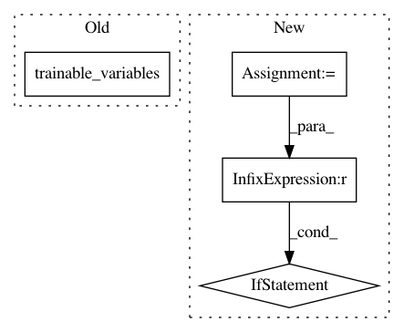

1c499b27e225d0c3b8634347c1bb924e26842cd1,txtgen/modules/decoders/rnn_decoder_base.py,RNNDecoderBase,_build,#RNNDecoderBase#Any#Any#,123
Before Change
self._add_internal_trainable_variables()
// Add trainable variables of `self._cell` which may be constructed
// externally
self._add_trainable_variable(self._cell.trainable_variables())
self._built = True
return outputs, final_state, sequence_lengths
After Change
max_decoding_length_train = self._hparams.max_decoding_length_train
if max_decoding_length_train is None:
max_decoding_length_train = utils.MAX_SEQ_LENGTH
max_decoding_length_infer = self._hparams.max_decoding_length_infer
if max_decoding_length_infer is None:
max_decoding_length_infer = utils.MAX_SEQ_LENGTH
max_decoding_length = tf.cond(
context.is_train(),
lambda: max_decoding_length_train,
lambda: max_decoding_length_infer)
In pattern: SUPERPATTERN
Frequency: 3
Non-data size: 4
Instances
Project Name: asyml/texar
Commit Name: 1c499b27e225d0c3b8634347c1bb924e26842cd1
Time: 2017-09-16
Author: zhitinghu@gmail.com
File Name: txtgen/modules/decoders/rnn_decoder_base.py
Class Name: RNNDecoderBase
Method Name: _build
Project Name: deepdrive/deepdrive
Commit Name: 6e0c869f5e17c734010fe7cc1b975ef178af9d1c
Time: 2018-04-26
Author: cquiter@gmail.com
File Name: agents/dagger/train/train.py
Class Name:
Method Name: run
Project Name: NifTK/NiftyNet
Commit Name: fe0950e68d35e29237d9d5ca82aabc8ff8a011ba
Time: 2017-07-25
Author: wenqi.li@ucl.ac.uk
File Name: niftynet/engine/application_driver.py
Class Name: ApplicationDriver
Method Name: _create_graph